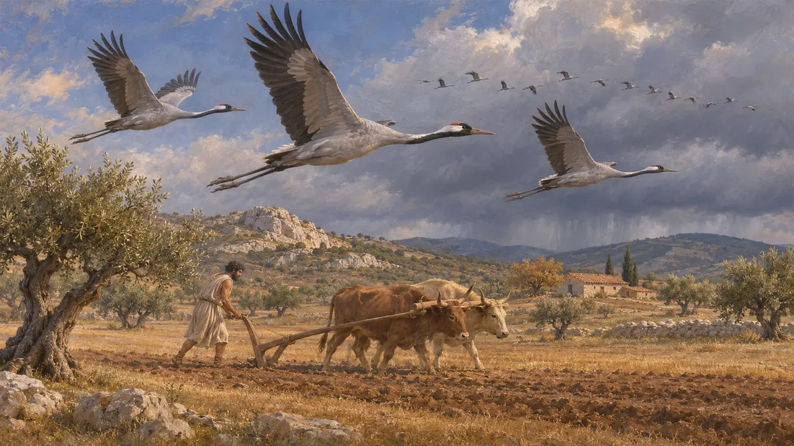
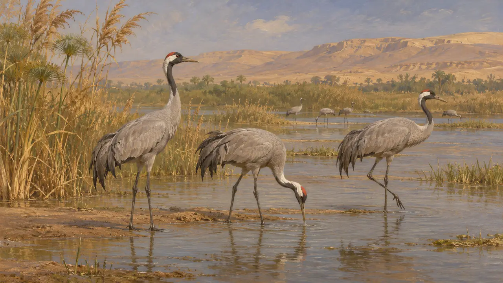
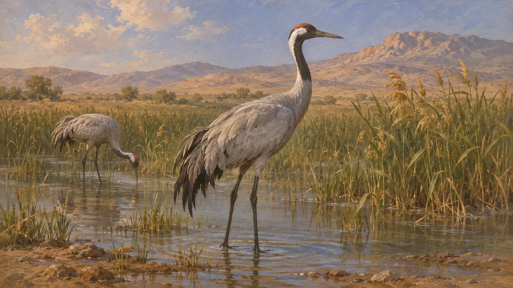
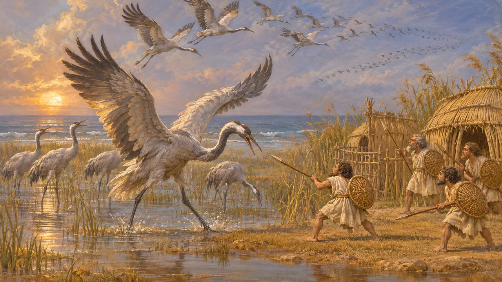

每年有两次,鹤群飞越波斯帝国的疆土,往返于北方的繁殖地和南方的越冬地之间。希腊作家注意到它们,把它们看作季节的标志,也知道它们在埃及越冬。关于波斯人如何看待鹤,直接的证据很少,因此下文所述大多出自希腊文献。
游戏中： 游戏在阿托斯、巴加斯塔纳、伊斯特河、马拉松、孟斐斯、帕尔萨、帕萨尔加德、普拉提亚、萨第斯、苏萨和温泉关关卡中绘出鹤作为空中的飞鸟。它们只是背景景物,没有任何规则读取它们。

随季节迁徙的鸟
古代记述赫西俄德在《工作与时日》中,把鹤群从头顶飞过的鸣叫视为耕地和冬雨将至的信号。他生活的年代远早于波斯战争,但这首诗表明希腊农人已把鹤当作报时节的候鸟。后来亚里士多德在其动物学著作中描述了鹤的迁徙。
Hesiod, Works and Days

南方的冬季
古代记述希罗多德说，鹤会离开斯基泰的寒冷之地，到埃及和尼罗河上游地区过冬。这是他转述的见闻，并非他有意去验证的事情，不过向南迁徙的大致规律是正确的。
Herodotus 2.22

鹤与波斯人
古代记述据本条目编者所知,没有任何阿契美尼德铭文或泥板把鹤视为神圣之鸟或王室之鸟。因此,波斯人对这种鸟的态度不得而知,这一时期关于鹤的说法都出自希腊作家。
Herodotus 2.22

鹤与侏儒人
后世传说荷马把特洛伊大军比作逃避冬天、飞向大洋的鹤群,一边鸣叫,一边给侏儒人带去死亡。这幅图景属于诗歌与神话,而非博物学,与波斯时期没有关系。
Homer, Iliad 3.3-7
来源
- Herodotus 2.22
- Hesiod, Works and Days
- Homer, Iliad 3.3-7
- Aristotle, History of Animals